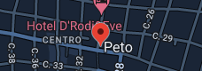
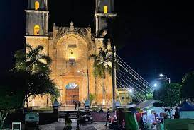

La belleza arquitectónica de la iglesia de Nuestra Señora de la Asunción del municipio de Peto, construida hace más de 220 años, se realza más con la nueva iluminación con la que cuenta ahora y se encuentra lista para dar inicio a su fiesta patronal, luego de que el Gobernador Mauricio Vila Dosal
| regresar al menu |